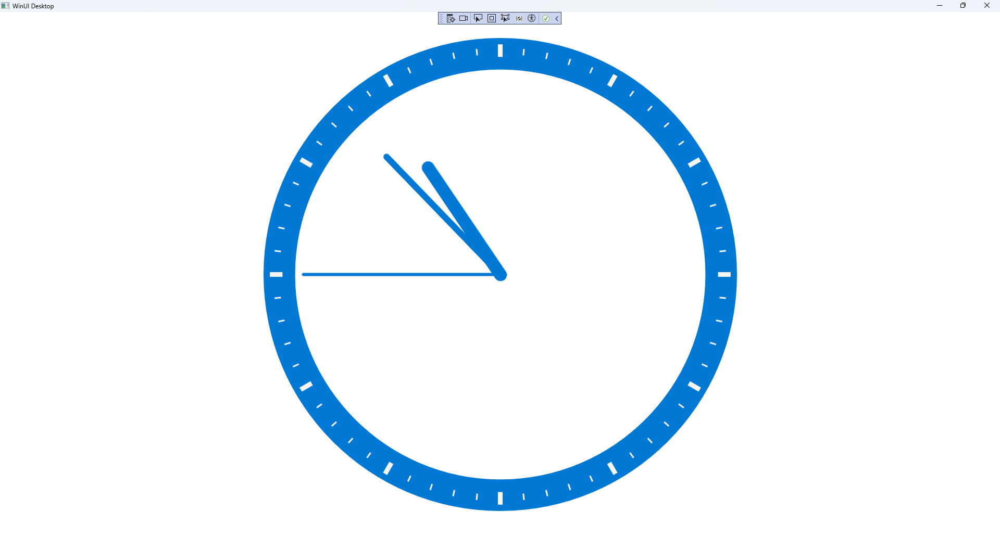

Clock Control
Learn creating a Clock Control using Windows App SDK with this Tutorial
Clock Control shows how to create a Control that can be used as a Clock using Windows App SDK.
Step 1
Follow Setup and Start on how to get Setup and Install what you need for Visual Studio 2022 and Windows App SDK.


Step 2
Then in Visual Studio within Solution Explorer for the Solution, right click on the Project shown below the Solution and then select Add then New Item…

Step 3
Then in Add New Item from the C# Items list, select WinUI and then select User Control (WinUI 3) from the list next to this, then type in the name of Clock.xaml and then Click on Add.

Step 4
Step 5
In the XAML for Clock.xaml there will be some XAML for a Grid, above Grid, type the following XAML:
<Viewbox>
<Canvas Name="Display" Height="300" Width="300" Loaded="Load"/>
</Viewbox>
This XAML contains a Viewbox which will Scale a Canvas with a Loaded event handler of Load.
Step 6
Step 7
You will now be in the View for the Code of Clock.xaml.cs near the top of the Code,
below the final using statement you will need to type the following using statement:
using Microsoft.UI.Xaml.Shapes;
Step 8
Then while still in the View for the Code of Clock.xaml.cs type the following Code
below the end of the Constructor of public Clock() { ... }:
private const int seconds_width = 2;
private const int minutes_width = 4;
private const int hours_width = 8;
private readonly DispatcherTimer _timer = new();
private readonly Canvas _markers = new();
private readonly Canvas _face = new();
private double _diameter;
// Dependency Property & Properties
// Transform Method
// Markers Method
// Hand, GetHand, AddHand & RemoveHand Methods
// SecondHand, MinuteHand & HourHand Methods
// Layout & Load Methods
The class for Clock represents the User Control for the Clock and includes a
DispatcherTimer that will be used for the time of the Clock along with a double for the diameter of the Clock.
Step 9
While still in the class of Clock after Comment of // Dependency Properties & Properties type the following Dependency Properties and Properties:
public static readonly DependencyProperty FillProperty =
DependencyProperty.Register(nameof(Fill), typeof(Brush),
typeof(Clock), null);
public Brush Fill
{
get { return (Brush)GetValue(FillProperty); }
set { SetValue(FillProperty, value); }
}
public bool IsRealTime { get; set; } = true;
public bool ShowSeconds { get; set; } = true;
public bool ShowMinutes { get; set; } = true;
public bool ShowHours { get; set; } = true;
public DateTime Time { get; set; } = DateTime.Now;
public bool Enabled
{
get { return _timer.IsEnabled; }
set
{
if (_timer.IsEnabled)
{
_timer.Stop();
}
else
{
_timer.Start();
}
}
}
The Dependency Property will be used for elements of the Clock that will use the Property of Fill and the other Properties configure
aspects of the Clock including which hands to show and if the Clock is Enabled or not.
Step 10
While still in the class of Clock after Comment of // Transform Method type the following Code:
private TransformGroup Transform(double angle, double x, double y)
{
var transformGroup = new TransformGroup();
var firstTranslate = new TranslateTransform()
{
X = x,
Y = y
};
transformGroup.Children.Add(firstTranslate);
var rotateTransform = new RotateTransform()
{
Angle = angle
};
transformGroup.Children.Add(rotateTransform);
var secondTranslate = new TranslateTransform()
{
X = _diameter / 2,
Y = _diameter / 2
};
transformGroup.Children.Add(secondTranslate);
return transformGroup;
}
This Method will create a TransformGroup to rotate elements to be used on the Clock.
Step 11
While still in the class of Clock after Comment of // Markers Method type the following Method:
private void Markers(Canvas canvas, double thickness)
{
double inner = _diameter - 15;
_markers.Children.Clear();
_markers.Width = inner;
_markers.Height = inner;
for (int i = 0; i < 60; i++)
{
var marker = new Rectangle
{
Fill = Foreground
};
if ((i % 5) == 0)
{
marker.Width = 3;
marker.Height = 8;
marker.RenderTransform = Transform(i * 6, -(marker.Width / 2),
-(marker.Height * 2 + 4.5 - thickness / 2 - inner / 2 - 6));
}
else
{
marker.Width = 1;
marker.Height = 4;
marker.RenderTransform = Transform(i * 6, -(marker.Width / 2),
-(marker.Height * 2 + 12.75 - thickness / 2 - inner / 2 - 8));
}
_markers.Children.Add(marker);
}
canvas.Children.Add(_markers);
}
This Method will create the set of small and large markers to be displayed on the Clock
Step 12
While still in the class of Clock after Comment of // Hand, GetHand, AddHand & Remove Hand Methods type the following Methods:
private Rectangle Hand(double width, double height) => new()
{
Width = width,
Height = height,
Fill = Fill,
RadiusX = width / 2,
RadiusY = width / 2,
Name = width.ToString()
};
private Rectangle GetHand(int width) =>
FindName(width.ToString()) as Rectangle;
private Rectangle AddHand(int width, int height)
{
var hand = GetHand(width);
if (hand == null)
{
hand = Hand(width, height);
_face.Children.Add(hand);
}
return hand;
}
private void RemoveHand(int width)
{
var hand = GetHand(width);
if (hand != null)
{
_face.Children.Remove(hand);
}
}
Hand will be used to create the hands for the Clock and will take advantage of the different widths to tell them apart in the next
Methods of AddHand, which will put the hands on the Clock and RemoveHand which will remove any hands.
Step 13
While still in the class of Clock after Comment of // SecondHand, MinuteHand & HourHand Methods type the following Methods:
private void SecondHand(int seconds)
{
if (ShowSeconds)
{
var secondsHeight = (int)_diameter / 2 - 20;
var secondsHand = AddHand(seconds_width, secondsHeight);
secondsHand.RenderTransform = Transform(seconds * 6,
-seconds_width / 2, -secondsHeight + 4.25);
}
else
{
RemoveHand(seconds_width);
}
}
private void MinuteHand(int minutes, int seconds)
{
if (ShowMinutes)
{
var minutesHeight = (int)_diameter / 2 - 40;
var minutesHand = AddHand(minutes_width, minutesHeight);
minutesHand.RenderTransform = Transform(6 * minutes + seconds / 10,
-minutes_width / 2, -minutesHeight + 4.25);
}
else
{
RemoveHand(minutes_width);
}
}
private void HourHand(int hours, int minutes, int seconds)
{
if (ShowHours)
{
var hoursHeight = (int)_diameter / 2 - 60;
var hoursHand = AddHand(hours_width, hoursHeight);
hoursHand.RenderTransform = Transform(
30 * hours + minutes / 2 + seconds / 120,
-hours_width / 2, -hoursHeight + 4.25);
}
else
{
RemoveHand(hours_width);
}
}
These Methods will manage the display and movement of the three hands of the Clock for seconds, minutes and hours.
Step 14
While still in the class of Clock after Comment of // Layout & Load Methods type the following Methods:
private void Layout(Canvas canvas)
{
canvas.Children.Clear();
_diameter = canvas.Width;
var rim = new Ellipse
{
Height = _diameter,
Width = _diameter,
Stroke = Fill,
StrokeThickness = 20
};
canvas.Children.Add(rim);
Markers(canvas, rim.StrokeThickness);
_face.Width = _diameter;
_face.Height = _diameter;
canvas.Children.Add(_face);
}
private void Load(object sender, RoutedEventArgs e)
{
Layout(Display);
_timer.Interval = TimeSpan.FromSeconds(1);
_timer.Tick += (object s, object obj) =>
{
if (IsRealTime)
{
Time = DateTime.Now;
}
SecondHand(Time.Second);
MinuteHand(Time.Minute, Time.Second);
HourHand(Time.Hour, Time.Minute, Time.Second);
};
_timer.Start();
}
Layout will create the look-and-feel of the Clock and uses the Method for Markers and Load
will be used when the Canvas of the User Control is loaded and setup the DispatcherTimer
to allow the time to be displayed along with the hands of the Clock.
Step 15
Step 16
In the XAML for MainWindow.xaml there will be some XAML for a StackPanel, this should be Removed:
<StackPanel Orientation="Horizontal"
HorizontalAlignment="Center" VerticalAlignment="Center">
<Button x:Name="myButton" Click="myButton_Click">Click Me</Button>
</StackPanel>
Step 17
While still in the XAML for MainWindow.xaml above </Window>, type in the following XAML:
<local:Clock Margin="50" Foreground="WhiteSmoke" Needle="4"
Fill="{ThemeResource SystemControlHighlightAccentBrush}"/>;
This XAML contains the User Control of Clock with Properties set including Foreground and Fill.
Step 18
Step 19
In the Code for MainWindow.xaml.cs there be a Method of myButton_Click(...) this should be Removed by removing the following:
private void myButton_Click(object sender, RoutedEventArgs e)
{
myButton.Content = "Clicked";
}
Step 20
Step 21
Once running you will see the Clock Control displayed, with the current time displayed on the Clock.

Step 21